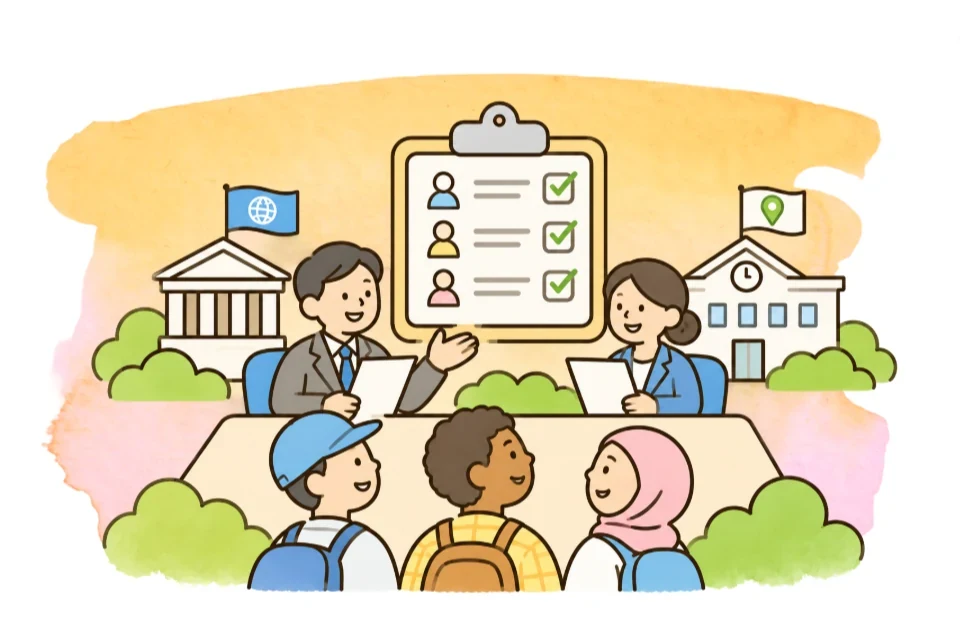
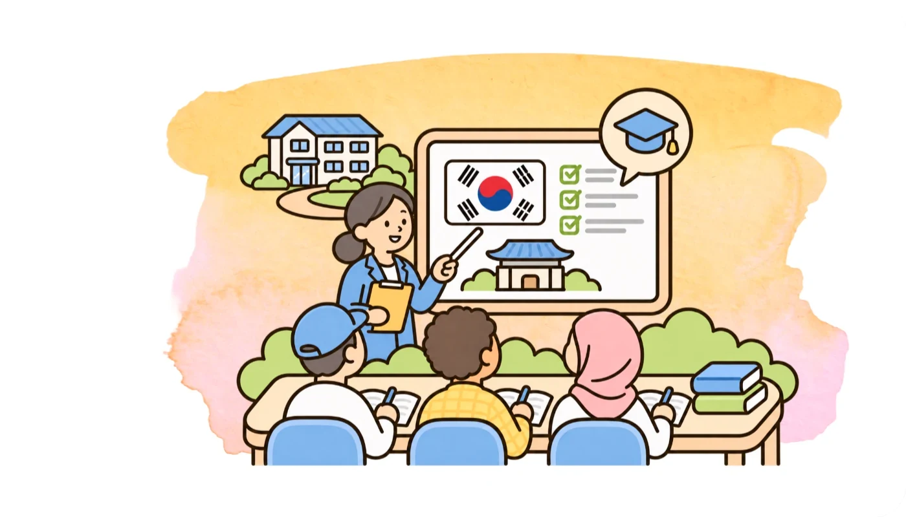
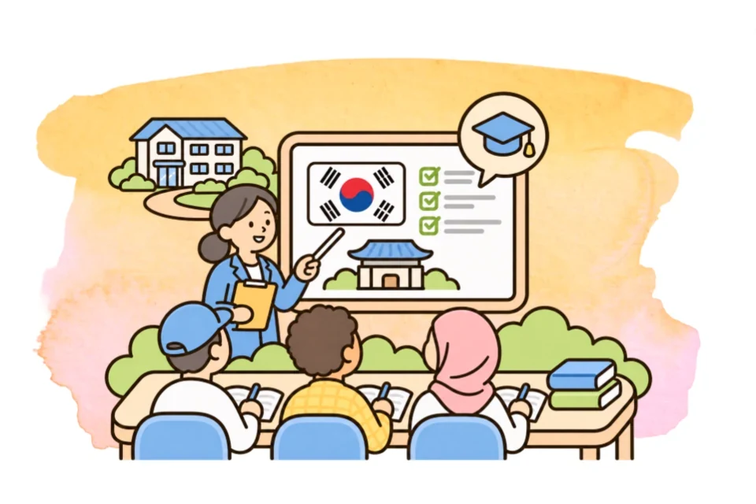
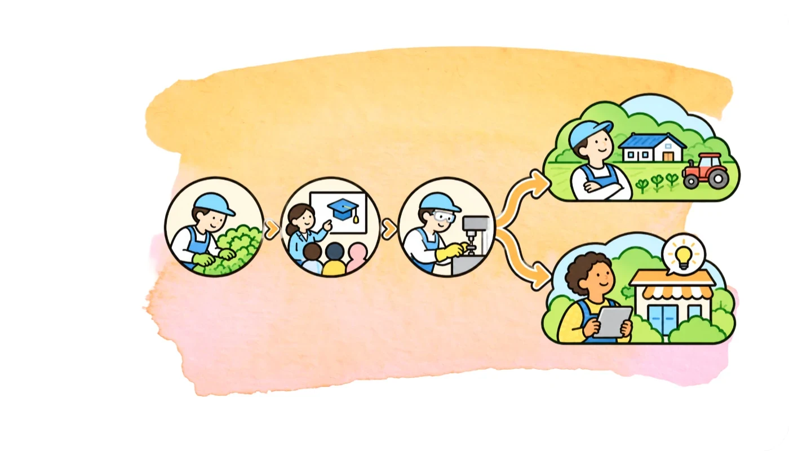
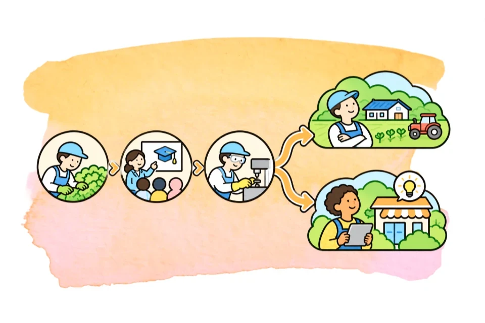
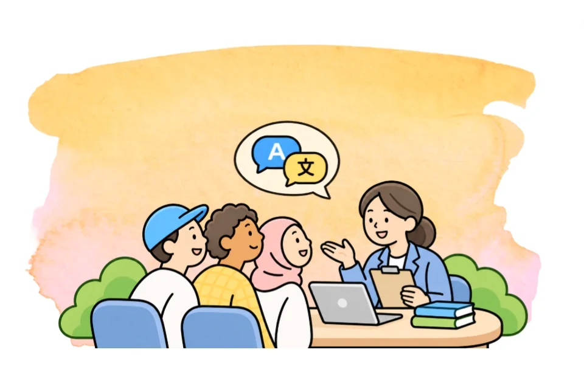
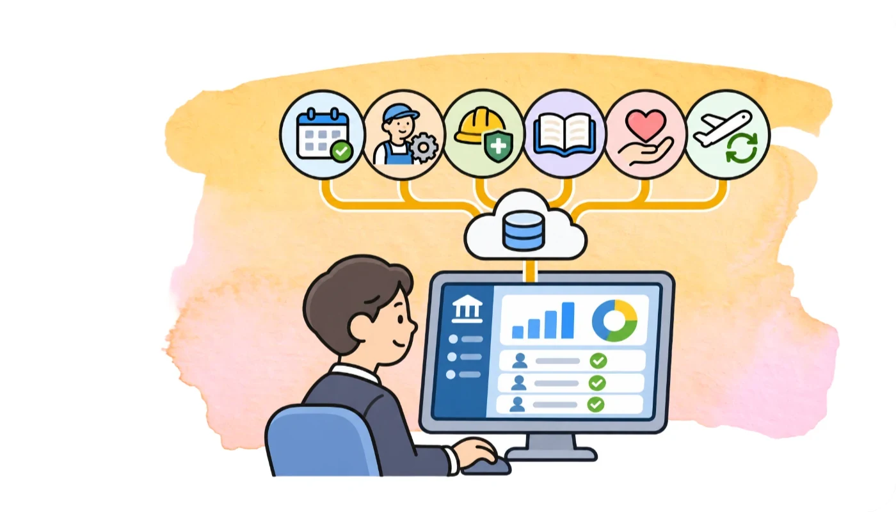
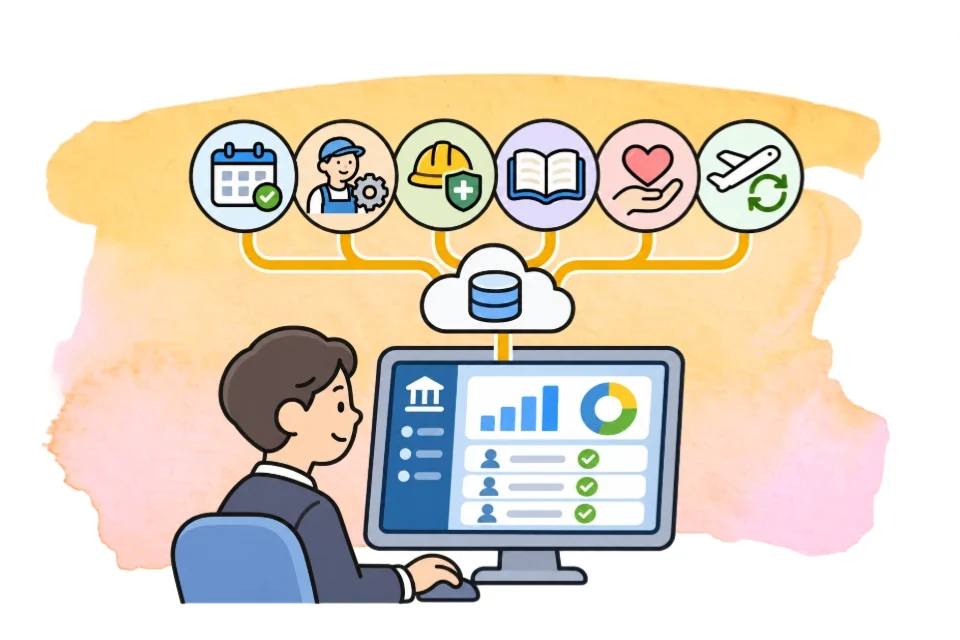

HOW ZUVILAND WORKS
농업 인재의
시작부터 미래까지
투명한 공공 선발부터 안정적인 정착, 경력 성장과 귀환까지.
쥬비랜드는 사람을 중심으로 설계한 5가지 솔루션으로
농업 인재의 모든 여정을 연결합니다.
-
-card1.webp)

01공공 선발 연계
신뢰할 수 있는 첫걸음
송출국 정부와 국내 지자체가 직접 선발하는 투명한 공공 경로를 지원합니다.
협약 설계와 출국 전 교육을 지원해 과도한 채무 부담 없는 입국을 돕습니다. -


02K팜 캠퍼스
안심하고 시작하는 한국 생활
숙소부터 교육과 생활 관리까지 한곳에서 지원합니다.
표준화된 주거 환경과 입국 후 30일 집중 적응 프로그램을 통해
안정적인 한국 생활의 시작을 돕습니다. -


03K팜 경력패스
경험이, 미래의 경력이 되는 성장
근무와 교육, 숙련 경험을 체계적으로 기록하고 다음 시즌의 성장까지
연결합니다. 한국 농촌에 정착하거나 고향에서 새로운 기회를 만드는
두 가지 경력 경로를 지원합니다. -
-card4.webp)

04전 과정 마음케어
마음을 먼저 살피는 따뜻한 동행
출국 전부터 근무와 귀환까지 모국어 상담과 단계별 적응 지원을 제공합니다.
낯선 환경에서 발생하는 어려움을 조기에 살피고, 근로자가 존중받으며 일할 수
있도록 돕습니다. -


05통합 관리 시스템
현장 기록을 하나로 연결
근태·숙련·안전·한국어·심리·귀환의 6대 데이터를 체계적으로 관리합니다.
지자체용 관리 시스템과 근로자용 경력패스 플랫폼을 통해 행정 부담을 줄이고
관리의 연속성을 높입니다.